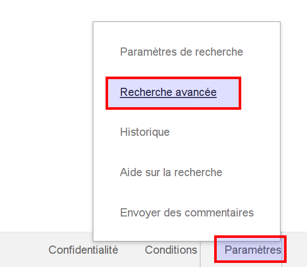
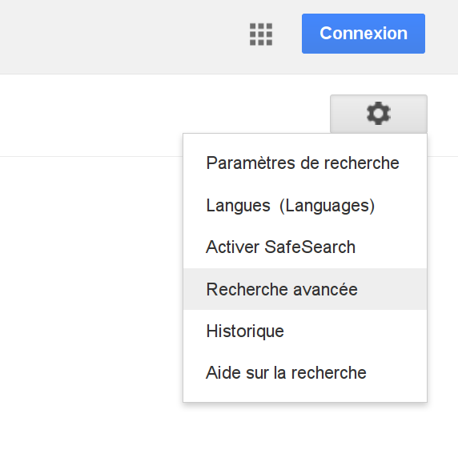

Advanced Engine Search
Alexandre Racine - Igor Milhit
2 mars 2016
Introduction
Google Search
- partout, tout le temps
- Google me connaît mieux que moi-même
- intrusif mais efficace
Google Search
...pourtant, parfois, le besoin d'aller plus loin se fait sentir.
- Qui connaît la recherche avancée de Google ?
- Qui l'utilise ?
- Et la syntaxe de recherche, c'est... ?
Fonctionnement de base
- Par mots clés :
panda roux - Opérateur par défaut :
ET - Phrases simples :
l'aéroport le plus proche
Terme manquant
Exemple : https://www.google.ch/search?q=panda+python+goudron
Exercice pratique
Nous voulons acheter du thé vert japonais à la fin de notre journée de travail.
Proposez-nous des adresses.
Des mots clés particuliers
Définition
définition [terme]
fait apparaître la définition du terme avant les résultats.
Météo
Quel temps fait-il à New Dehli ?
météo dehli : https://www.google.ch/search?q=météo+dehli
Vous pouvez faire quelques tests... Quelle est la source ? Est-ce toujours correct ?
Calcul
Peut donner le résultat d'un calcul :
14 x 18 → 14 * 18
Exercice pratique
Trouvez comment obtenir le résultat de 5 à la puissance 5
Conversion d'unité
3 dollars en francs suisse : https://www.google.ch/search?q=3+dollars+en+francs+suisse
Exercice pratique
- Essayez de convertir des unités de volume
Ex :litres vers cm3 - Explorez maintenant les autres possibilités de conversion d'unités
Autres conversions

Recheche avancée
Où la trouver ?
Au fond de la page, sous Parmètres > Recherche avancée :

Où la trouver ?
Au sommet de la page, sous la roue crantée :

Le masque
statistiques bibliothèquesentre les années2014 et 2016au format de fichierExcel- Comment ?
- Solution
Mise en évidence syntaxe
- Renvoi au champ de recherche simple
- Affinage des résultats
- Comment trouver des résultats limités au site de la confédération suisse ?
- Solution
Autres opérateurs
Exemples
inurl:
- Retrouve le terme contenu dans une URL
- Retrouvez les sites rattachés à la heg de cette manière
- Solution
- Comparaison avec l'opérateur
site:vu plus haut - Quel constat ?
cache:
Permet de consulter une page telle qu'elle s'affichait lors de la dernière exploration Google.
OR, |
Permet de rechercher des pages qui ne contiennent qu'un terme parmi plusieurs.
" "
Permet de trouver l'expression exacte. Telle qu'elle apparaît.
Observez les différences entre ces deux exemples.
* (troncature)
Lorsque vous ne connaissez pas ou n'êtes pas sûr du terme que vous recherchez
Observez les différences entre ces deux exemples.
En conclusion
Les trucs à retenir
- Recherche simple peut suffire mais...
- Recherche avancée pour aller plus loin
- Combinaison de plusieurs opérateurs
- Dépend des besoins de la requête...
- et de l'adéquation à votre recherche
- Analyse des résultats
ETesprit critique